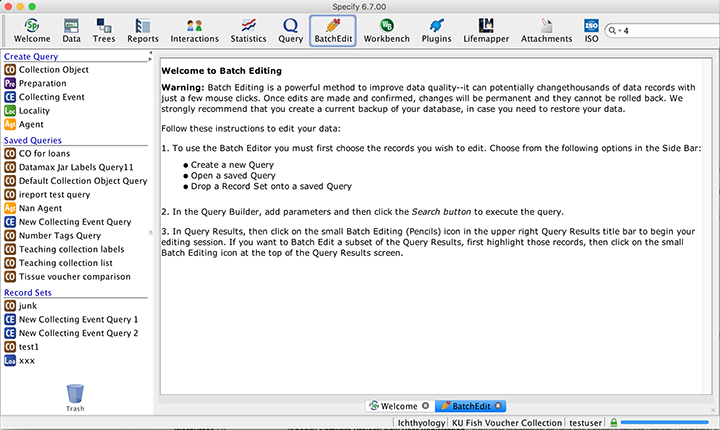
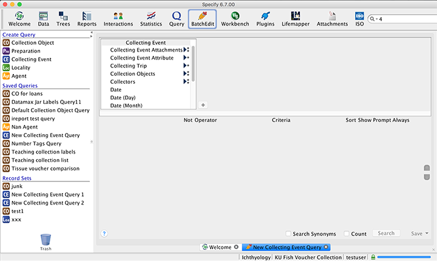
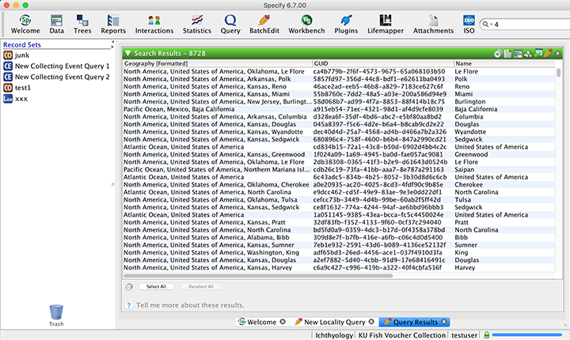
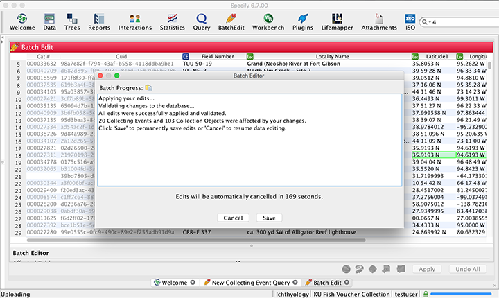

Batch Editor
Batch Editor
Batch Editor
NEW in the 6.7 release of the Specify desktop application, we offer the ability to edit a 'batch' of data using an interface very similar to the WorkBench. Batch Editing is a powerful method to improve data quality -- it can potentially change thousands of data records with just a few mouse clicks. Once edits are made and confirmed, changes will be permanent and they cannot be rolled back. We recommend you take the following precautions:
A few other notes regarding the Batch Editor:
The following documentation for the Batch Editor is meant only as a basic overview. To better explain the changes that will be made to related data when using the Batch Editing tool we have created a video which demonstrates these changes using real workflows. That video can be found on our website: <a href="http://www.sustain.specifysoftware.org/support/helpcasts/">sustain.specifysoftware.org/support/helpcasts</a>
Open the Batch Editing tool by clicking the  (Batch Edit) button on the Task Bar (at the top of
the Specify screen).
(Batch Edit) button on the Task Bar (at the top of
the Specify screen).

To use the Batch Editor you must first choose the records you wish to edit. The side bar offers helpful options to get started:
The Create Query section of the side bar lists the tables that are available to batch edit.
Start by clicking the table that contains the data you wish to edit.
If there is an existing query that will include the data you wish to batch edit choose it from the side bar.
If there is a saved Record Set that you wish to batch edit from the query used to create it, or another saved query, right-mouse click on the record set and choose View with Saved Query from the pop-up dialog.
Note: When doing Batch Edits from a Collection Object query, Specify basically 'flattens' the data when bringing it into the batch editor. Therefore, changes made to fields in the batch editor will only affect that single Collection Object record. However, when creating queries from one of the other tables, the changes made will be reflected in all related records. The Batch Editing video explains this in more detail: <a href="http://www.sustain.specifysoftware.org/support/helpcasts/">sustain.specifysoftware.org/support/helpcasts</a>

If you chose to create a query or open a saved query, you will notice that the Query Builder interface is displayed. Choose the tables and fields you wish to edit. Also, include related data that will allow you to determine the uniqueness of the records you are editing. For help using the Query Builder please Click Here.
Once you have completed your query you may wish to save it by clicking the Save button at the bottom of the Workspace and naming your query. This is useful when editing large sets of data that require multiple Batch Editing instances.
Otherwise, click the Search button at the bottom of the Workspace to display your query results. The data you see in the query results screen is the exact data that will be displayed in the Batch Editor.
Once you are satisfied that you have successfully chosen the data you wish to edit you can either bring all the data or a subset of the data into the Batch Editor.
(Batch Edit) button
located at the top-right corner of the Search Results bar to display all the data into
the Batch Editor.
(Batch Edit) button located at the
top-right corner of the Search Results bar.

Your data is now available to manipulate in the Batch Editor tool. The Batch Editor interface is similar to the WorkBench, with the same features for manipulating data, such as; copy, past, sort, fill up, fill down, etc. For more information about the tools available please Click Here.
Note: When deleting terms in the batch editor ensure that there are no spaces in the field.
Data Validation Panel
The Batch Editor also includes a Data Validation panel at the bottom-left of the Workspace. Fields containing invalid data are highlighted in red and fields containing edited data are highlighted in green. The panel also displays a total count of affected fields.
Note: Changes made in the Batch Editor can not be applied when invalid data is present.
Note: Not all fields are available for editing in the Batch Editor. Non-editable fields are grayed out.
If at any time during editing you wish to revert back to the original data, click the Undo All button located at the bottom-right of the Workspace screen.
Once you have finished editing your data and are ready to commit your changes, click the Apply button located at the bottom-right of the Workspace screen.

Validate and Apply Your Edits
Specify will now validate your data, and display statistics about the changes you are about to make. At this point your changes have not been committed to the database, and you can click the Cancel button without losing your edits.
The Batch Progress dialog will display both alerts regarding the progress in validating the edits and results of the changes:
Typically this will display that All edits were successfully applied; however, if a concurrent user edited one of the records while you were batch editing, Specify will recognize this and skip those records. If you wish to verify this with a co-worker you can click the Cancel button at the bottom of the dialog to cancel the process. The Batch Editor will still be displayed with all your previous changes and you can apply the changes again when you are ready.
This message displays the total number of records that will be updated in each table that is affected by the batch edit. It is meant to help you understand the relationships to tables that are affected by your changes. If these numbers do not reflect the changes you believe you made we recommend that you cancel the update at this time. It may be useful to select only a few records to load into the batch editor, make your edits, and then apply them in the batch editor. Once that is complete you can create queries on those changed records that allow you to better understand how the edits you made have affected related fields and tables, and whether you wish to proceed in making those changes to all your records.
A timer also appears on the Batch Process dialog, allowing you 3 minutes to either commit or cancel your changes. When you bring data into the batch editor, you are essentially 'checking it out' from the database so that you may make changes that will later be validated and applied. If other users are also accessing and editing the same data, it can result in a different version of data in the database than when the data was originally checked out. In this instance Specify will not commit the change and will alert you to this action in the status dialog. Once the validation process has completed, Specify will not check the version of the data again. For that reason, we limit the amount of time between the validation completion and the choice to either commit or cancel the updates.
Click OK to close the dialog.
Batch Edited Record Sets
Upon completion of a Batch Edit the records are saved in a new Record Set. If you saved the original query used to define the data you edited, then the resulting record set will use the same name as the query. If you did not save the query the record set will be saved wtih the name of the table used to create the query followed by a number that increments by 1 each time that the query was used for a batch edit. For example, if you created a Collecting Event query but did not save it, the ensuing record set would be named: New Collecting Event Query 1. You do not need to save these Record Sets, they are only meant to give you an opportunity to see the edited records at a later time. You may find it convenient to rename the record sets with the name or objective of the Batch or perhaps the date.